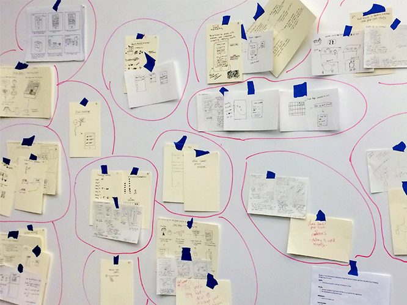
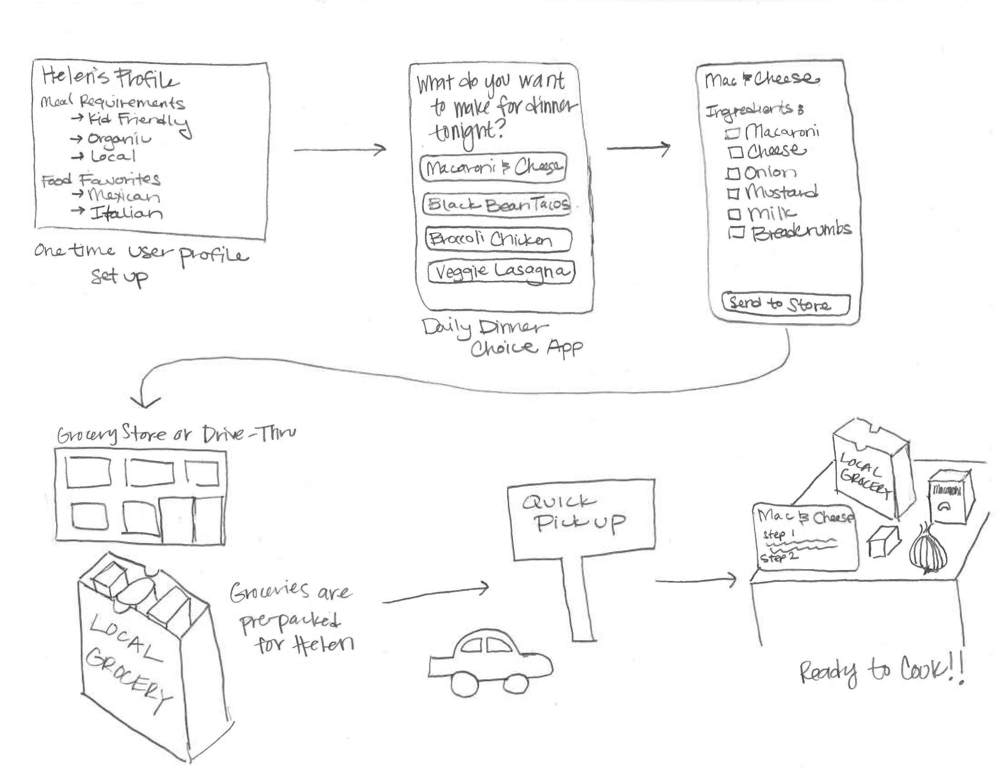
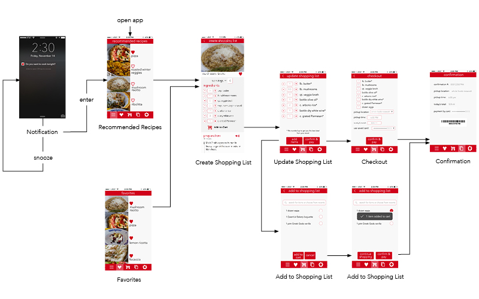

KITCHEN COLLAB
Mobile app design that helps busy people to cook more often.
The Challenge
How can we help people to cook more often?
Cooking at home is a great way to spend time with loved ones. It also empowers people to take control of their nutrition and decide each ingredient that goes into a meal. Yet, even with all of these benefits, many people still don't cook at home as often as they may like, for they think cooking as difficult, time-consuming or dull.
Research
Methods & Findings

127 Surveys
- Healthy eating and saving money are main motivations to cook more.
- Dominant reason preventing them cooking more is "too busy to cook".

9 Interviews & 170 Notes
- Having hands-on ingredients is necessary for cooking.
- Cooking should be easy and fast.
- Planning ahead is helpful.

20 Competitive Product Analyses
- Existing products or services are either too expensive, time consuming to navigate or not customizable.
- Most products are focusing on recipes.

Persona
Helen and Bud

Helen - Healthy Wife
Goal: Quickly cook healthy meals for family
" Call me a foodie if you want. My family deserves good-quality healthy meals. "Bud - Budget Student
Goal: Save money by cooking at home
" I really need to get serious about my budget. Eating out costs a lot. "
Design Requirements:
- Quick: Time for prep and/or cooking is 30 minutes or less.
- Simple: Limited number of ingredients and few or no hard-to-find ingredients.
- Affordable: Little to no added cost.
- Customizable: Offers a variety of food options based on user preference.
- Convenient: No significant, unique time management required
Ideation
Champion of 48 Ideas
We brainstormed and sketched 48 ideas, which we grouped by similarity and then narrowed down to three based on the design requirements generated from our persona. Then we voted on our favorite idea.
Prototype & Evaluate
5 Rounds of Iteration
We used Sketch to mockup the UI and used Flinto to make it into interactive prototype for usability testing. After 5 rounds of usability testing and iteration, we addressed 26 suggestions in the feedbacks and streamlined the main task flow.
Final Solution
IA & Visual Redesign
Revisit IA - Changed Tab Bar to Side Menu
Tabs should be used to control different workflow instead of control different steps of one workflow (view recipe & add to shopping list).
Reduce the exits to keep users focusing on main task.
Reflect Design Requirements
As time is the biggest concern, it should be brought upfront allowing users to consider.
Serving is to reflect the user's preference setting.

Follow iOS Visual Standard
Redesigned visual components and changed font size to align with iOS standard and improved aesthetics.
Reduce Unnecessary Click
The "create shopping list" and "add more ingredients" pages can be merged into one page to improve effeciency.
Time: 10/2014 - 12/2014
Team: Brenda Weitzer, Jennifer Nerad, Kim Lambert
Contribution: Research Planning, Interview, Quantitative & Qualitative Analysis, Ideation, Interaction design, Usability Testing and Iteration, Redesign
Deliverables: Research Report & Persona, Usability Testing Report, Design Specification